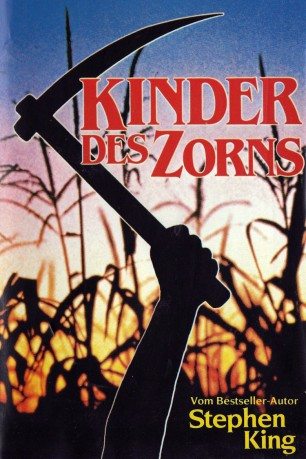
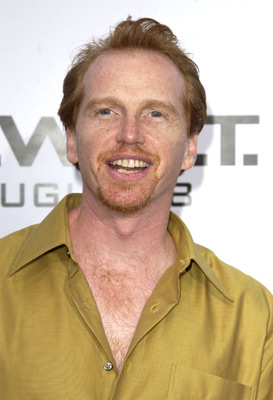
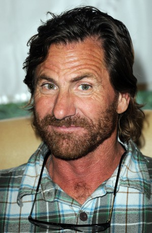

#1793 Kinder des Zorns
Alternativ: Children of the Corn
 
 IMDB-Wertung: 5.6 / 10
IMDB-Wertung: 5.6 / 10  Metascore: 45
Metascore: 45 
In der amerikanischen Einöde gerät das Paar Burt (Peter Horton) und Vicky (Linda Hamilton) in eine gefährliche Situation. Die Leiche eines Jungen, den sie während ihrer Autofahrt auf der Straße gefunden haben, kündet schon von den bedrohlichen Ereignissen. Denn als Burt und Vicky in eine nahegelegene Stadt hineinfahren, wo sie den Leichnam für weitere Untersuchungen abgeben wollen, müssen sie feststellen, dass das normale Leben dort keine Rolle mehr spielt. Die Kinder des Örtchens haben das Regiment übernommen, in dem sich keine Erwachsenen mehr befinden. Der Nachwuchs bildet eine in sich geschlossene Gemeinschaft der Jugend, die nach klar festgelegten Regeln lebt. Erwachsene spielen dabei keine Rolle mehr. Die Kinder Sarah (Anne Marie McEvoy) und Job (Robby Kiger) scheinen jedoch anders zu sein. Deswegen versuchen Burt und Vicky, sie aus der Stadt zu bringen, was ihnen den tödlichen Zorn der beiden Anführer Isaac (John Franklin) und Malachai (Courtney Gains) einbringt.
Jahr: 1984
Dauer: 92 Minuten
FSK: BPjM Restricted
Land: USA Studio: New World PicturesTonspuren:
Untertitel: Deutsch,
Auflösung: 720p (1280x688) Größe: 3358 MB
Genre: Horror
Regisseur: Fritz Kiersch
Drehbuch: Stephen King, George Goldsmith
Soundtrack: Jonathan Elias
Darsteller:
- Peter Horton als Burt
 Linda Hamilton als Vicky
Linda Hamilton als Vicky R.G. Armstrong als Diehl
R.G. Armstrong als Diehl- John Franklin als Isaac
-  Courtney Gains als Malachai
-  John Philbin als Amos
 Mitch Carter als Radio preacher
Mitch Carter als Radio preacher- Robby Kiger als Job
- Anne Marie McEvoy als Sarah
 Julie Maddalena als Rachel
Julie Maddalena als Rachel- Jonas Marlowe als Joseph
- Dan Snook als Boy
- David Cowen als Dad
- Suzy Southam als Mom
- D.G. Johnson als Mr. Hansen
- Patrick Boylan als Hansen's customer
- Elmer Soderstrom als Hansen's customer
- Teresa Toigo als Hansen's customer
- Dennis Carl als Boy , uncredited
- Eric Freeman als Israel , uncredited
- Corey Frizzell als Boy in front row of church scene , uncredited
Datei: X:\Person\Stephen King\Kinder des Zorns (1984, FSKBPjM Restricted, 1280x688).mkv seit 23.08.2015
Festplatte: HD Collection-7+mehr(A-Z)+Person
 Es gibt insgesamt 44 Filme in der Gruppe 'Person\Stephen King'
Es gibt insgesamt 44 Filme in der Gruppe 'Person\Stephen King'